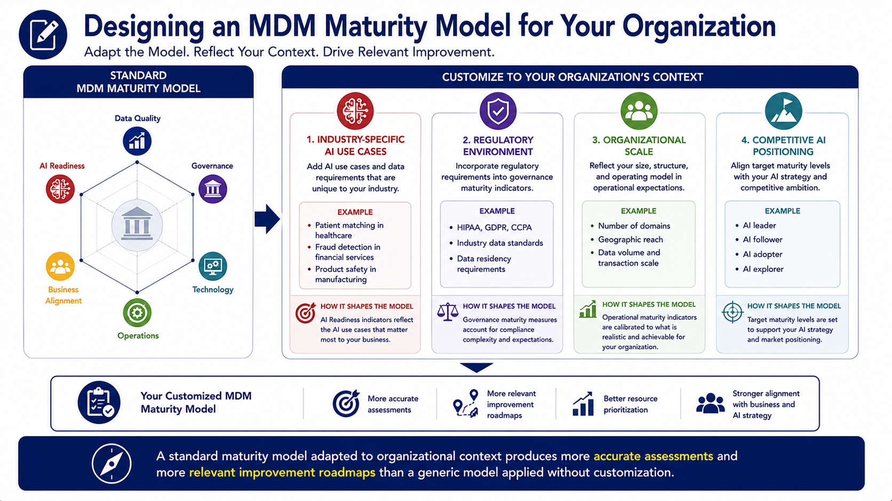
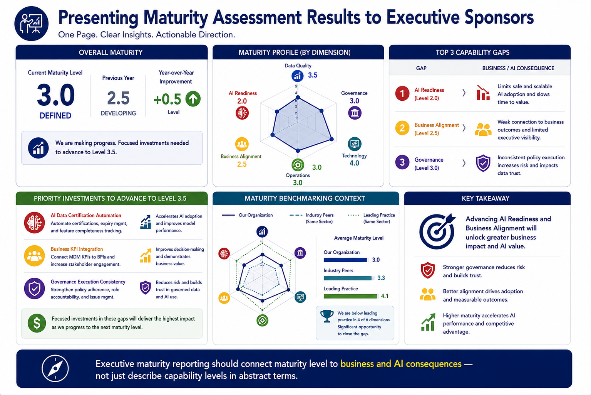
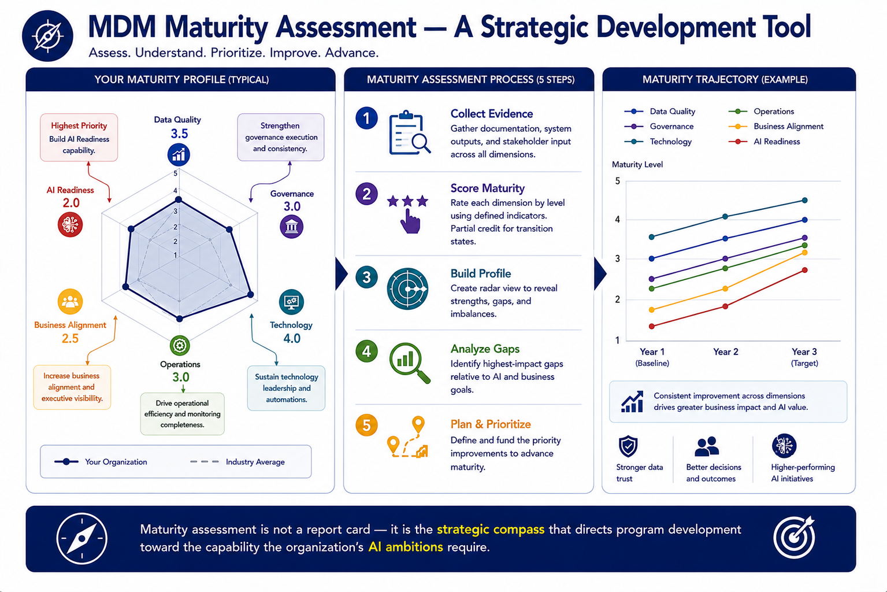

Maturity Assessment
Module support notes
Maturity Model Design Considerations
Standard MDM maturity models provide a useful starting framework but should be adapted to organizational context before being applied. The AI readiness maturity indicators appropriate for a financial services organization subject to AI model risk management regulation are different from those appropriate for a consumer goods company focused on AI-driven personalization. The governance maturity indicators appropriate for a global enterprise with hundreds of data stewards are different from those appropriate for a mid-sized organization with a small, centralized governance team.
Organizations that take the time to customize maturity model indicators to reflect their specific industry, regulatory environment, and organizational scale consistently produce assessments that generate more credible scores and more relevant improvement roadmaps than those that apply a generic model without customization.
Tip
Customize across four dimensions before applying a standard maturity model: industry-specific AI use cases added to AI readiness indicators, regulatory environment incorporated into governance maturity indicators, organizational scale reflected in operational maturity expectations, and competitive AI positioning incorporated into target maturity level setting. A maturity model that doesn't reflect these dimensions will produce scores that feel accurate but improvement priorities that feel generic.

Communicating Maturity Results to Executive Sponsors
Executive sponsors respond to maturity results most effectively when they are presented in terms of business and AI consequences rather than abstract capability descriptions. "The program is at Level 3 AI Readiness" is less actionable than "at current AI readiness maturity, the program can support 14 AI models on certified data — advancing to Level 4 would enable support for 35 models and reduce AI time-to-production by an estimated additional 2.4 months."
This consequence-based framing connects maturity investment decisions to the AI program outcomes that executives are accountable for delivering, making the case for maturity investment in the same language as the AI strategy it enables.
Note
Executive maturity reporting should connect maturity level to business and AI consequences — not just describe capability levels in abstract terms. A strong executive maturity briefing includes: current and prior year maturity levels with year-over-year improvement; a radar chart with dimension-level scores; the top three capability gaps and their business or AI consequence; priority improvement investments for the next level; and competitive maturity benchmarking context.

Maturity assessment is not a report card — it is the strategic compass that directs program development toward the capability the organization's AI ambitions require.
